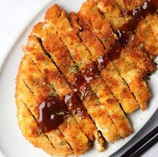

Chicken Katsu

Description
Chicken katsu, also known as panko chicken or tori katsu, is a Japanese dish consisting of fried chicken coated in panko bread crumbs. It is similar to tonkatsu, which features fried pork cutlets.
This dish has gained international popularity and is now commonly served at Japanese and East Asian restaurants around the world.
So, hyped by learning how to make this dish? Let's get into it!
Ingredients
- 4 skinless, boneless chicken breast halves
- salt and pepper to taste
- 2 tablespoons all-purpose flour
- 1 egg, beaten
- 1 cup of ponko bread crumbs
- 1 cup of oil for frying
Steps
- Season chicken breasts on both sides with salt and pepper. Place flour, beaten egg, and panko crumbs into separate shallow dishes.
- at chicken breasts in flour, shaking off any excess; dip into egg, and then press into panko crumbs until well coated on both sides.
- Heat oil in a large skillet over medium-high heat.
- Place chicken in the hot oil, and fry until golden brown, 3 or 4 minutes per side.
- Transfer to a paper towel-lined plate to drain.
- Enjoy!